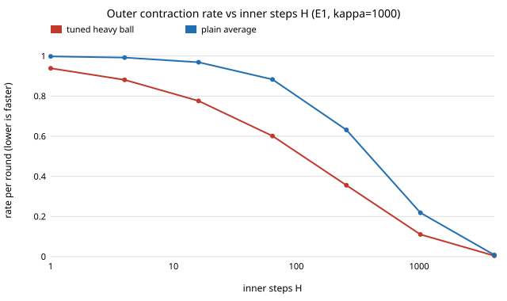

How should the outer optimiser and sync interval be set when workers run H local steps per round?
research/outer-momentum
DiLoCo-style outer momentum: H inner steps precondition the outer quadratic (κ_H ≈ κ/H), exact per-mode rates, optimal momentum falls 0.88 → 0.01 with H (fixed 0.7/0.9 Nesterov needs 4–8× more rounds), and the wallclock-optimal sync interval is H* ≈ C (sync cost in inner steps), worth ≈ √C/2.
What it found
On a quadratic, H inner steps make the outer optimiser see curvatures 1 − (1 − ηa)H, which saturate at 1: the outer condition number shrinks from κ to about κ/H (1000 → 16.1 at H=64). Per-round rates are exact 2×2 spectral radii (matching literal simulation), the tuned heavy-ball outer step puts every mode at exactly √β*, and the best momentum falls from 0.88 at H=1 to 0.01 at H=1024, so a fixed Nesterov 0.7/0.9 needs 4–8× more rounds. With a sync costing C inner steps, the wallclock-optimal interval is H* ≈ C, worth about √C/2 over syncing every step (16× at C=1000), while plain averaging has no interior optimum. Stylised: noiseless quadratic with a shared Hessian.
A figure from its own output

Paper, code and results
Produced with AI assistance (Claude). Results are from the code in this repository and are simulated or stylised unless the abstract says otherwise; nothing here implies affiliation with or endorsement by any lab, researcher or company cited. MIT licensed.